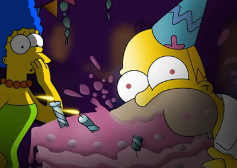

Datos Personales
- Nombre Completo: Homero Simpson
- Fecha de Nacimiento: 16/05/1957
- Teléfono: 0351-4556969
- Email: iammaxpower@mail.com
- Domicilio Calle Siempre Viva 124, Springfield
Sobre mí
Estudios
- Escuela Secundaria de Springfield - Completo (en duda)
- Universidad de Springfield- Ingenieria Nuclear
Experiencia Laboral
- Los Bolos del tio Barny
- Planta Nuclear
Mas sobre mi
He tenido muchos trabajos en mi vida: boxeador, mascota, astronauta, asegurador de bebés, imitador de Krusty, conductor de camión de transporte, hippie, conductor de máquina quitanieves, crítico gastronómico, artista conceptual, vendedor de grasa, feriante, alcalde, estafador, guardaespaldas del alcalde, capataz, concejal de basura, escalador, granjero, inventor, Smithers, Poochie, ayudante de famosos, trabajador de central eléctrica, escritor de galletas de la fortuna, barón de la cerveza, empleado del Kwik-E-Mart, homófobo y misionero, pero protegiendo a la gente, que me da el mejor sentimiento de todo